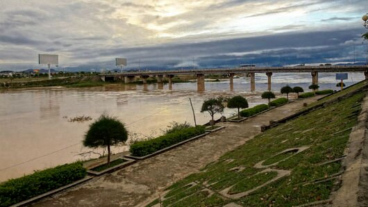
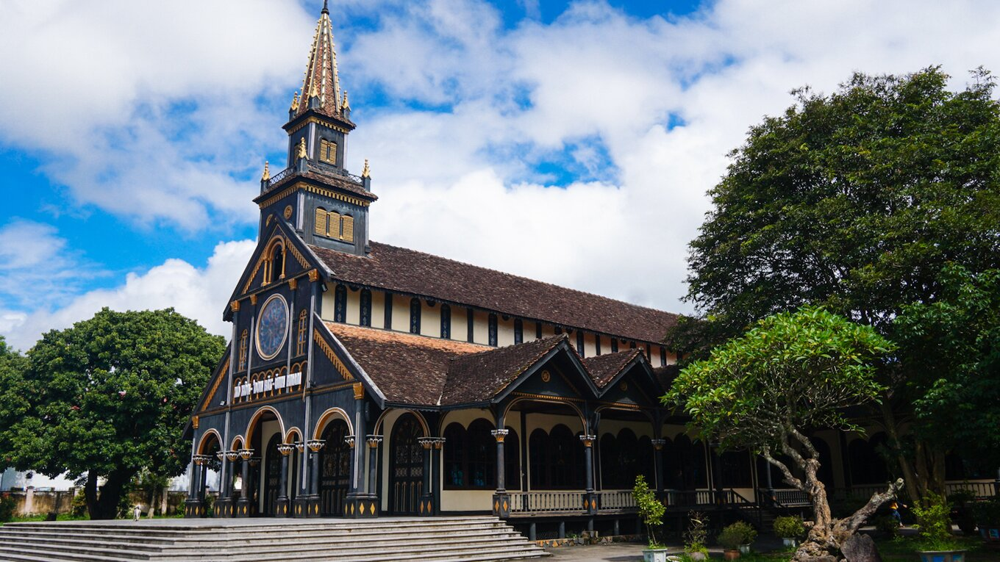

Sông Đăk Bla
Sông Đăk Bla là nơi cung cấp phù sa, thuận lợi cho việc hoạt động sản xuất nông nghiệp của người dân Tây Nguyên và cũng là địa điểm du lịch konvô cùng thu hút. Ôm trọn lấy dòng sông Đăk Bla là màu xanh của cảnh sắc thiên nhiên Kon Tum, không gian trong lành tạo cảm giác thoải mái, thư giãn cho bất kể du khách nào đặt chân tới đây

Nhà thờ gỗ Kon Tum
Nhà thờ Gỗ với tuổi đời hàng thế kỷ luôn quyến rũ tất cả những người tới đây bởi vẻ đẹp kiến trúc Roman độc đáo. Nằm ở đường Nguyễn Huệ, Thống Nhất, Thành phố Kon Tum, việc di chuyển đến Nhà Thờ Gỗ không có gì khó khăn.